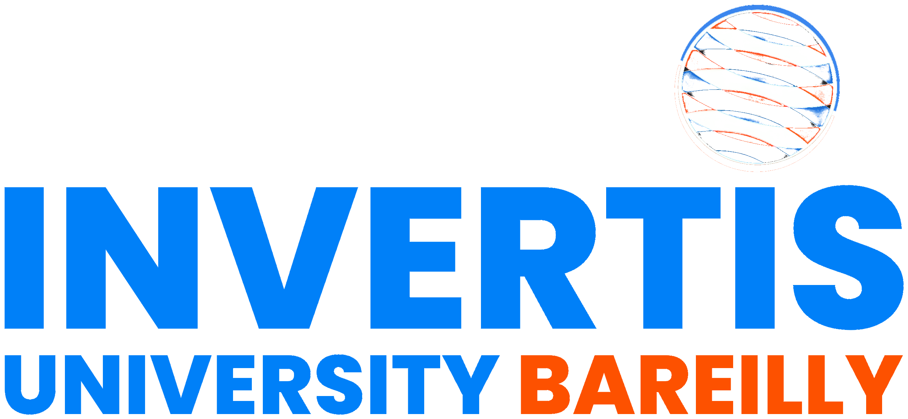
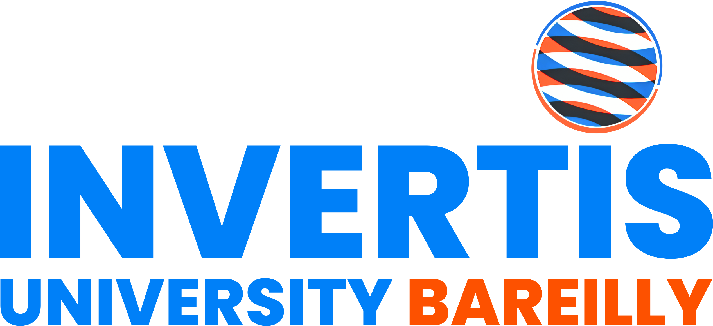

Advanced Mechanics & Properties of Matter Lab
Interactive simulations for rotational dynamics, elasticity, fluid properties & oscillations ·
📖 Full User Guide & Lab Manual →

Advanced Mechanics & Properties of Matter Lab